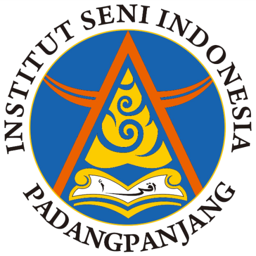

Kata Sambutan
Prof. Dr. Zulkifli, M.Sn.
Dekan Fakultas Bahasa dan Seni UNIMED
Assalamu'alaikum Warahmatullahi Wabarakatuh,
Salam sejahtera bagi kita semua.
Puji dan syukur kita panjatkan ke hadirat Tuhan Yang Maha Esa atas terselenggaranya Pameran Seni Rupa Karya Mahasiswa Jurusan Seni Rupa Fakultas Bahasa dan Seni Universitas Negeri Medan yang dilaksanakan di Institut Seni Indonesia Padangpanjang
Pameran ini merupakan wujud implementasi nyata dari pembelajaran pada Mata Kuliah Manajemen Pameran. Melalui kegiatan ini, mahasiswa tidak hanya mengembangkan kemampuan artistik dan kreativitas dalam berkarya, tetapi juga memperoleh pengalaman profesional dalam merancang, mengelola, dan menyelenggarakan sebuah peristiwa seni, mulai dari proses kurasi, penataan ruang pamer, publikasi, hingga aspek manajerial lainnya.
Kami menyampaikan apresiasi dan terima kasih yang sebesar-besarnya kepada seluruh sivitas akademika ISI Padangpanjang atas sambutan hangat, dukungan, serta kesempatan kolaborasi yang diberikan. Kehadiran pameran ini menjadi langkah strategis dalam memperluas wawasan kreatif mahasiswa sekaligus mempererat jejaring dan kerja sama antarperguruan tinggi seni di Pulau Sumatra.
Penyelenggaraan pameran ini membuktikan bahwa kerja keras, dedikasi, dan kolaborasi yang baik antara mahasiswa, dosen, serta berbagai pihak pendukung mampu menghadirkan ruang apresiasi seni yang berkualitas. Seni tidak hanya berbicara tentang keindahan karya, tetapi juga tentang kemampuan mengelola proses secara profesional untuk membangun ekosistem kreatif yang berkelanjutan.
Saya menyampaikan penghargaan yang setinggi-tingginya kepada dosen pembimbing, panitia, dan seluruh mahasiswa yang telah bekerja dengan penuh komitmen sehingga kegiatan ini dapat terlaksana dengan baik. Kepada para pengunjung, kami mengucapkan selamat menikmati dan mengapresiasi karya-karya terbaik yang ditampilkan. Semoga pameran beserta katalog ini dapat memberikan inspirasi, memperkaya wawasan, serta memperkuat kecintaan kita terhadap seni dan budaya.
Selamat dan sukses atas terselenggaranya pameran ini.
Wassalamu'alaikum Warahmatullahi Wabarakatuh.
Kata Sambutan
Dr. Riswel Zam, S.Sn., M.Sn.
Dekan Fakultas Seni Rupa dan Desain ISI Padangpanjang
Assalamualaikum Warahmatullahi Wabarakatuh,
Puji dan syukur senantiasa kita panjatkan ke hadirat Allah SWT atas segala limpahan rahmat, karunia, dan kesempatan yang diberikan kepada kita semua sehingga kegiatan Pameran Mata Kuliah Manajemen Pameran Jurusan Pendidikan Seni Rupa Universitas Negeri Medan dapat terselenggara dengan baik di Institut Seni Indonesia Padangpanjang. Shalawat dan salam semoga senantiasa tercurah kepada Nabi Muhammad SAW yang menjadi teladan dalam pengembangan peradaban, ilmu pengetahuan, dan nilai-nilai kemanusiaan.
Atas nama sivitas akademika Institut Seni Indonesia Padangpanjang, khususnya Fakultas Seni Rupa dan Desain, kami menyampaikan apresiasi dan penghargaan yang setinggi-tingginya kepada Jurusan Pendidikan Seni Rupa Universitas Negeri Medan atas kepercayaan yang diberikan kepada ISI Padangpanjang sebagai mitra sekaligus tuan rumah penyelenggaraan pameran ini. Kehadiran pameran bertajuk Kalanusa Art Exhibition yang diselenggarakan pada tanggal 11–12 Juni 2026 di Ruang Pameran Gedung Pertunjukan Hoerijah Adam merupakan momentum yang sangat berarti dalam memperkuat jejaring akademik dan kerja sama antarlembaga pendidikan seni di Sumatera.
Pameran ini memiliki makna yang lebih luas daripada sekadar ruang presentasi karya. Sebagai bagian dari implementasi Mata Kuliah Manajemen Pameran, kegiatan ini merupakan wujud pembelajaran berbasis praktik yang memberikan pengalaman nyata kepada mahasiswa dalam merancang, mengelola, dan menyelenggarakan sebuah perhelatan seni rupa secara profesional. Mahasiswa tidak hanya dituntut menghasilkan karya yang berkualitas, tetapi juga belajar mengenai perencanaan program, pengelolaan ruang pamer, kuratorial, publikasi, dokumentasi, hingga evaluasi kegiatan. Dengan demikian, pameran menjadi laboratorium akademik yang mengintegrasikan pengetahuan, keterampilan, kreativitas, dan kerja kolaboratif.
Karya-karya yang ditampilkan dalam pameran ini; mulai dari seni lukis, seni grafis, batik, hingga seni ukir tentunya merepresentasikan capaian proses pembelajaran sekaligus keberagaman ekspresi artistik mahasiswa. Di dalam setiap karya terkandung gagasan, pengalaman, refleksi, dan respons kreatif terhadap berbagai realitas yang mereka hadapi. Oleh karena itu, pameran bukan hanya menjadi sarana apresiasi publik, tetapi juga menjadi media dialog intelektual dan kultural yang mempertemukan pencipta karya dengan masyarakat.
Di tengah perkembangan teknologi, arus informasi yang semakin cepat, dan perubahan lanskap budaya global, keberadaan pameran seni rupa tetap memiliki peran strategis sebagai ruang perjumpaan gagasan, pertukaran perspektif, dan penguatan identitas budaya. Melalui kegiatan seperti ini, mahasiswa dilatih untuk tidak hanya menjadi pencipta karya seni, tetapi juga menjadi insan kreatif yang mampu mengelola, mengomunikasikan, dan mempertanggungjawabkan praktik keseniannya dalam konteks masyarakat yang terus berubah.
Kami memandang kegiatan ini sebagai bentuk nyata sinergi antara Universitas Negeri Medan dan Institut Seni Indonesia Padangpanjang dalam membangun ekosistem pendidikan seni yang lebih kuat. Kerja sama yang terjalin melalui pertukaran kunjungan, pameran, serta berbagai aktivitas akademik lainnya diharapkan dapat memperluas wawasan mahasiswa dan dosen, memperkaya pengalaman pembelajaran, serta mendorong lahirnya kolaborasi-kolaborasi kreatif yang berkelanjutan di masa mendatang.
Pada kesempatan ini, kami mengucapkan terima kasih kepada Rektor Universitas Negeri Medan beserta jajaran pimpinan Fakultas Bahasa dan Seni, Ketua Jurusan Pendidikan Seni Rupa, dosen pembimbing, panitia pelaksana, mahasiswa peserta pameran, serta seluruh pihak yang telah berkontribusi dalam menyukseskan kegiatan ini. Kehadiran dan partisipasi semua pihak merupakan bukti bahwa pendidikan seni tidak dapat berkembang secara optimal tanpa semangat kolaborasi, saling belajar, dan saling menguatkan.
Akhirnya, kami berharap pameran ini dapat memberikan manfaat yang luas, tidak hanya sebagai ajang apresiasi karya, tetapi juga sebagai sarana penguatan budaya akademik, pengembangan kompetensi profesional mahasiswa, serta kontribusi nyata dalam memajukan pendidikan dan ekosistem seni rupa di Sumatera dan Indonesia pada umumnya.
Selamat berpameran dan selamat menikmati karya-karya terbaik yang dihadirkan dalam kegiatan ini.
Wabillahi taufik wal hidayah, Wassalamualaikum Warahmatullahi Wabarakatuh.
Kata Sambutan
Dr. Agus Priyatno, M.Sn.
Kepala Jurusan Seni Rupa UNIMED
Assalamu'alaikum Wr. Wb.
Salam Sejahtera, Salam Budaya.
Selamat datang di ruang pameran seni rupa mahasiswa Jurusan Seni Rupa Universitas Negeri Medan yang diselenggarakan di Galeri Hoerijah Adam Institut Seni Indonesia (ISI) Padangpanjang.
Pameran ini adalah laboratorium hidup sekaligus pembuktian dari mata kuliah Manajemen Pameran. Menjadi perupa yang tangguh di masa kini tidak cukup hanya dengan mahir menciptakan karya, tetapi juga harus bijak dan profesional dalam mengelolanya. Di sini, mahasiswa tidak hanya dituntut mahir berkarya di studio, tetapi juga harus cakap dalam mengorganisasi, mengkurasi, dan mengelolah sebuah peristiwa seni secara profesional di luar daerah.
Dipilihnya ISI Padangpanjang sebagai tempat pameran untuk memperluas jejaring, menguji mentalitas kreatif, serta membangun dialog budaya antardua institusi seni di Sumatra. Terima kasih yang sebesar-besarnya kepada pihak ISI Padangpanjang atas sambutan hangat dan ruang kolaborasi yang luar biasa ini. Apresiasi dan rasa bangga saya sampaikan kepada dosen pembimbing serta seluruh mahasiswa yang telah bekerja keras menyukseskan pameran ini.
Kepada para pengunjung, selamat mengapresiasi. Semoga sajian ini memberikan inspirasi dan ruang diskusi yang produktif bagi perkembangan seni rupa kita bersama.
Wassalamu'alaikum Warahmatullahi Wabarakatuh.